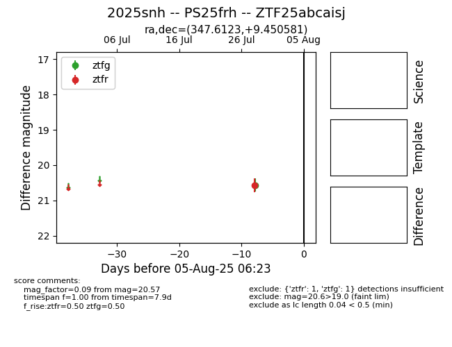

Target 2025snh at 2025-08-05 07:33, see:
FINK: fink-portal.org/2025snh
Lasair: lasair-ztf.lsst.ac.uk/objects/2025snh
ALeRCE: alerce.online/object/2025snh
TNS: wis-tns.org/object/2025snh
YSE: ziggy.ucolick.org/yse/transient_detail/2025snh
alt names
ZTF25abcaisj (ztf,fink)
2025snh (tns,yse)
PS25frh (panstarrs)
coordinates:
equatorial (ra, dec) = (347.6123,+9.45058)
galactic (l, b) = (85.6653,-45.98651)
photometry
last ztfg=20.57, ztfr=20.57
1 ztfg, 1 ztfr detections
